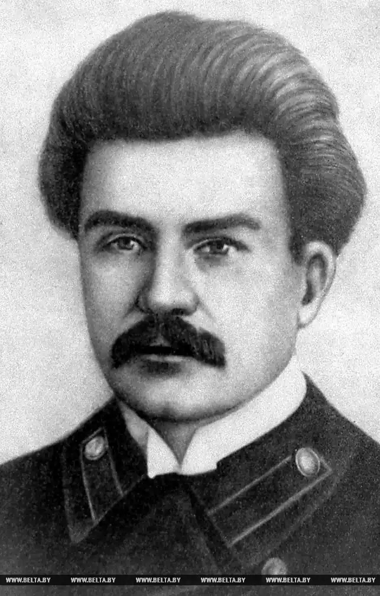
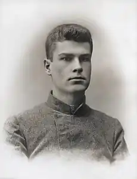
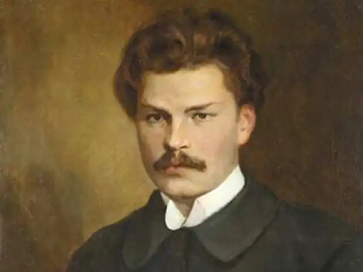

Богданович Максим Адамович — білоруський поет. Лірика Богдановича пов'язана з народною поезією, пройнята любов'ю до трудового народу.
Богданович Максим Адамович народився 27 листопада (9 грудня) 1891 року. Поет, перекладач, літературний критик і публіцист, класик білоруської літератури. Народився в родині відомого етнографа та історика, одного з керівників місцевої організації "Народна воля" А. Е. Богдановича. Закінчив Ярославський юридичний ліцей. У віці 25 років помер від туберкульозу легень.
Вперше виступив у пресі в 1907 з віршем у прозі "Музикант" у газ. "Наша нива", що видається у Вільно. Єдиний прижиттєвий збірник віршів "Вінок" вийшов у Вільно в 1913 на білоруському яѕыке в друкарні Мартіна Кухти. Літературна спадщина Богдановича було вперше повністю зібрано і видано АН БРСР у 1927-29 за участю батька поета. Богданович відомий як перекладач білоруська мова поетичних творів з російської, української, польської, французької, інших європейських мов. Писав вірші білоруською і російською, однак останні значно менше. Захоплення слов'янської народної поезією спонукало Богдановича створити віршоване перекладення уривка з "Слово о полку Ігоревім" — "Пісню про князя Ізяслава Полоцького". "Слово о полку Ігоревім", за свідченням батька поета, Богданович читав ще в дитинстві (в оригіналі і в перекладі А. Майкова). Перекладення вперше опубліковано в календарі "Нашої ниви" на 1911. Богданович сприймав "Слово о полку Ігоревім" як твір, що однаково належить трьом слов'янським культурам: російської, української та білоруської і тісно пов'язане з усною народною традицією. Богданович звернув увагу на соціально-естетичні засади поетичної образності пам'ятника: "Багато місця в "Слові" переповнені образами і порівняннями… взятими з побуту народу-хлібороба". Богданович писав про інтонаційному і ритмічному багатстві тексту "Слово о полку Ігоревім". В іншій статті ("Червона Русь. Австрійські українці") Богданович назвав "Слово" старовинною піснею-былиной. Поетичне перекладення Богдановича, яке В. П. Єрьомін вважав "вільним перекладом", відтворює фрагмент про князя Ізяслава Васильковиче ("Едін ж Изяславъ, сынъ Васильковъ… Труби трубятъ городеньскіи"). "Можна припустити, що Богданович обрав саме "Пісню" із-за останніх її рядків. Перекладений уривок зі "Слова" набував для самого поета відтінок ліричного нагадування про стародавньому місті, видавшем тевтонських лицарів і монголів, шведів і Наполеона, дбайливо хранившем пам'ять про великого білоруському революціонера Кастусе Калинівському та його друзів". У коментарі до "Пісні" у виданні "Білоруські поети" зазначено, що у Богдановича мова йде не про Гродно, а про Городні. Переклад фрагмента в Богдановича в цілому близький стародавнього тексту. Однак у його початку опущено слово "едін", тим самим не передано протиставлення Ізяслава іншим князям, гра дієсловом "притрепати" у Богдановича не відтворена. Фраза "и с хотию на кровать…", що є одним з "темних місць" "Слова", не увійшла в перекладення. Говорячи про те, як Ізяслав "ізронив" душу, Богданович опустив епітет "перлову", знявши при цьому важливу для поетики "Слова" орієнтацію на християнське уявлення про душу-перлині. Епітет "хоробрий" (про тіло Ізяслава) Богданович замінив на "відважна" (душа). Перекладення фрагмента "Слова" у Богдановича — це перше поетичне відтворення тексту пам'ятника на білоруську мову. Повний переклад на білоруську мову був опублікований лише в 1921 Янкою Купалою. На російську мову "Пісню про князя Ізяслава Полоцького" Богдановича перевів М. Ст. Банников.